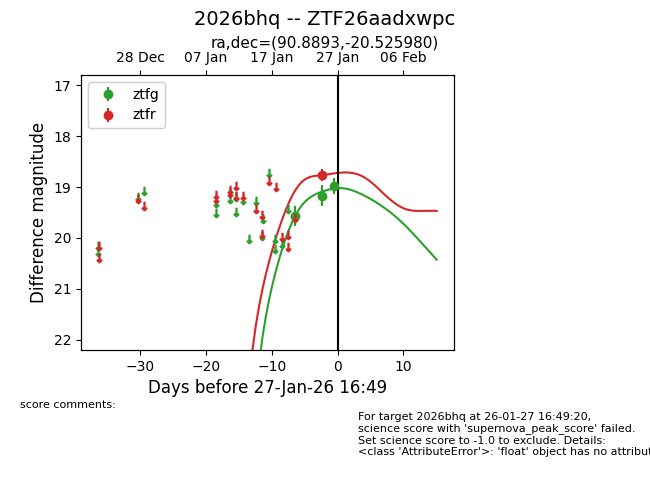
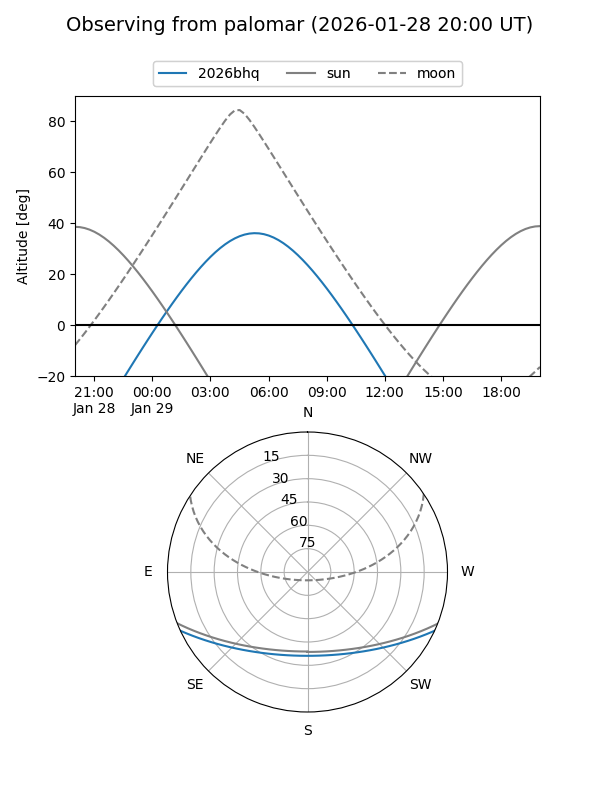
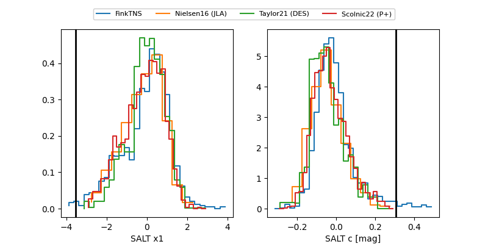

2026bhq
Target 2026bhq at 2026-01-27 09:11
Aliases and brokers:
FINK: link
Lasair: link
ALeRCE: link
TNS: link
YSE: link
alt names
ZTF26aadxwpc (ztf,fink_ztf)
2026bhq (tns,yse)
Coordinates:
equatorial (ra, dec) = 90.8893,-20.52598
equatorial (HMS+DMS) = 06:03:33.43,-20:31:33.53
galactic (l, b) = (226.6412,-19.43574)
Flags:
Photometry:
last ztfg=18.98, ztfr=18.77
3 ztfg, 1 ztfr detections
Lightcurve

Visibility


Additional plots
